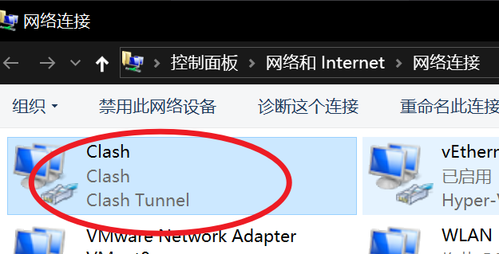

2024-03-09
设置应用全局
我们通常所说的全局模式, 指的是 使用浏览器访问某个地址时, 使用代理地址访问.
而 规则模式 是, 仅对匹配名单的地址使用代理.
而系统的其他App能否正常访问代理, 得看应用自己有没有提供 自动识别代理的功能.
对于MacOS, 直接使用 ClashX Pro 即可, 打开 使用增强模式 功能 即可对全局App使用代理
下面主要介绍Windows.
安装虚拟网卡服务
打开Clash主界面, 安装服务模式, 安装服务模块

安装好后图中圈出位置会显示:
当前状态: 已激活
打开TUN模式
在 系统代理 打开的情况下, 打开 TUN模式

成功后还可以看到有这个
